This ‘notebook’ consists of my run-through of Prof. Lorena Barba’s “12 steps to Navier-Stokes” course, because I admit I have a problem with fluids. It is set in a “professor first, student next” fashion, with the student developing the stock functions with his/her own ideas. The development is presented in order of relevance to the corresponding steps rather than chronologically. Most of the partial differential equations here are numerically solved using forward difference methods in time and backward difference methods in space.
Programming CFD methods is crucial in understanding how fluid solvers work because it allows one to learn about all possible points of error when running analyses through industrial software/packages, reducing debugging time in the long run.
Python Libraries
import numpy
import sympy
from sympy import init_printing
from sympy.utilities.lambdify import lambdify
import time, sys
from matplotlib import rc, pyplot, cm
from sympy import init_printing
from mpl_toolkits.mplot3d import Axes3D
init_printing(use_latex=True)
rc('font',**{'family':'serif'})
rc('text', usetex=True)
Step 1: 1D Linear Convection
Professor
Partial differential equation: $$ \frac{\partial u}{\partial t} + c\frac{\partial u}{\partial x} = 0 $$
Discretised: $$ \frac{u^{n+1}_i - u^n_i}{\Delta t} + c\frac{u^n_i - u^n_{i-1}}{\Delta x} = 0 $$
Initial condition: $$ u(x,0)= \begin{cases} 2, & x \in [0.5,1] \\ 1, & \mathrm{everywhere\;else} \end{cases} $$
nx = 41
dx = 2.0/(nx-1)
nt = 20
dt = 0.025
c = 1.0
u = numpy.ones(nx)
u[int (.5/dx): int(1/dx + 1)] = 2.0
print(u)
pyplot.figure(1, figsize=(9,4), dpi=100)
pyplot.title('Professor')
pyplot.plot(numpy.linspace(0,2,nx), u)
for n in range(nt):
un = u.copy()
for i in range(1,nx):
u[i] = un[i] - c*dt/dx*(un[i] - un[i-1])
pyplot.figure(2, figsize=(9,4), dpi=100)
pyplot.title('Professor')
pyplot.plot(numpy.linspace(0,2,nx), u)
pyplot.show()
[1. 1. 1. 1. 1. 1. 1. 1. 1. 1. 2. 2. 2. 2. 2. 2. 2. 2. 2. 2. 2. 1. 1. 1.
1. 1. 1. 1. 1. 1. 1. 1. 1. 1. 1. 1. 1. 1. 1. 1. 1.]
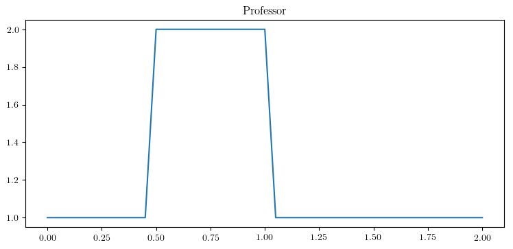
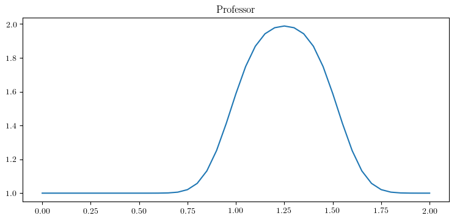
Student
No time to lose. (Down with mutability!)
def linearConvection(nx):
dx = 2.0/nx
nt = 21
dt = 0.025
c = 1
x = numpy.linspace(0,2,nx)
u = numpy.ones((nt,nx))
u[0][int (.5/dx): int(1/dx +1)] = 2.0
for n in range(nt-1):
for i in range(1,nx):
u[n+1][i] = u[n][i] - c*dt/dx*(u[n][i] - u[n][i-1])
pyplot.figure(1,figsize=(7,3), dpi=120)
pyplot.title('Student')
pyplot.plot(x, u[0], label='Initial')
pyplot.plot(x, u[nt-1], label='Final')
pyplot.xlabel('Position (m)')
pyplot.ylabel('Velocity (m/s)')
pyplot.legend()
linearConvection(40)
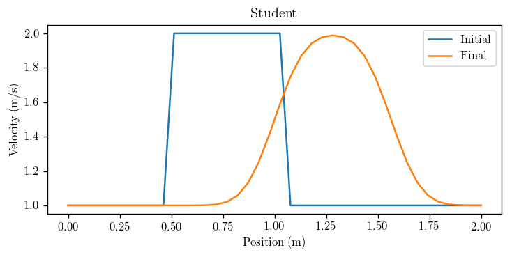
Step 2: 1D Nonlinear Convection
Professor
Partial differential equation: $$ \frac{\partial u}{\partial t} + u\frac{\partial u}{\partial x} = 0 $$
Discretised: $$ \frac{u^{n+1}_i - u^n_i}{\Delta t} + u^n_i\frac{u^n_i - u^n_{i-1}}{\Delta x} = 0 $$
Initial condition: $$ u(x,0)= \begin{cases} 2, & x \in [0.5,1] \\ 1, & \mathrm{everywhere\;else} \end{cases} $$
nx = 41
dx = 2.0/(nx-1)
nt = 20
dt = 0.025
u = numpy.ones(nx)
u[int (.5/dx): int(1/dx + 1)] = 2.0
pyplot.figure(figsize=(9,4), dpi=100)
pyplot.title('Professor')
pyplot.plot(numpy.linspace(0,2,nx), u)
for n in range(nt):
un = u.copy()
for i in range(1,nx):
u[i] = un[i]*(1 - dt/dx*(un[i] - un[i-1]))
pyplot.plot(numpy.linspace(0,2,nx), u)
pyplot.show()
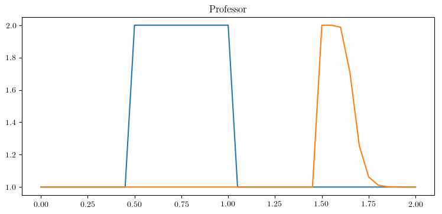
Student
def nonLinearConvection(nx):
dx = 2.0/nx
nt = 20
dt = 0.025
x = numpy.linspace(0,2,nx)
u = numpy.ones((nt,nx))
u[0][int (.5/dx): int(1/dx + 1)] = 2.0
for n in range(nt-1):
for i in range(1,nx):
u[n+1][i] = u[n][i]*(1 - dt/dx*(u[n][i] - u[n][i-1]))
return x, u
pos, vel = nonLinearConvection(40)
# Plotting
pyplot.figure(1,figsize=(7,3), dpi=120)
pyplot.title('Student')
pyplot.plot(pos, vel[0], label='Initial')
pyplot.plot(pos, vel[-1], label='Final')
pyplot.xlabel('Position (m)')
pyplot.ylabel('Velocity (m/s)')
pyplot.legend()
pyplot.show()
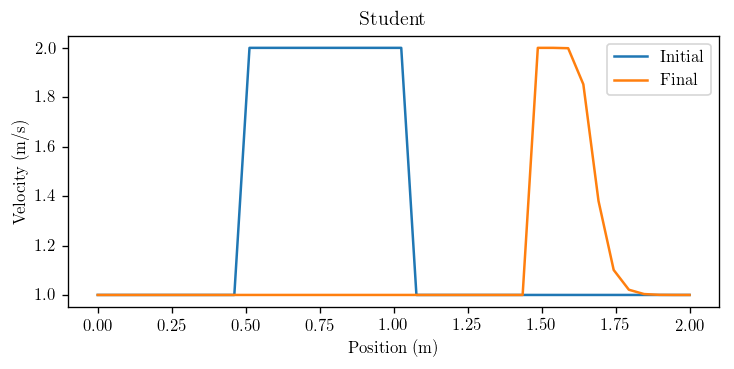
Investigation: CFL Condition
Professor
Courant number: $$ \sigma = \frac{u\Delta t}{\Delta x} \leq \sigma_{\max} $$
def linearconv(nx):
dx = 2.0/(nx-1)
nt = 20
c = 1.0
sigma = 0.5
dt = sigma*dx
u = numpy.ones(nx)
u[int (.5/dx): int(1/dx + 1)] = 2.0
pyplot.figure(1, figsize=(9,4), dpi=100)
pyplot.title('Professor')
pyplot.plot(numpy.linspace(0,2,nx), u)
for n in range(nt):
un = u.copy()
for i in range(1,nx):
u[i] = un[i] - c*dt/dx*(un[i] - un[i-1])
pyplot.plot(numpy.linspace(0,2,nx), u)
linearconv(501)
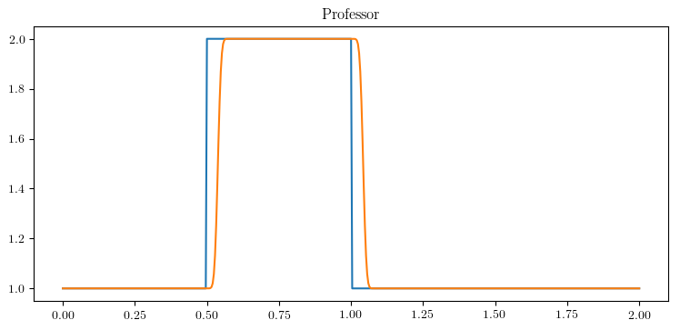
Student
This function allows you to input the simulation time and time-step size and provides warnings if the Courant Number is greater than 1 with recommendations.
def linearConvectionCFL(mesh_size, time, dt):
dx = 2.0/mesh_size
c = 1
time_steps = int(time/dt)
sigma_max = dt/dx
if sigma_max > 1:
correct_dt = dx
print('Warning: CFL Number greater than 1. Solver will probably produce incorrect results. Maximum time-step should be %s.' %correct_dt)
# Initial condition definition
x = numpy.linspace(0,2,mesh_size)
u = numpy.ones((time_steps,mesh_size))
u[0][int (.5/dx): int(1/dx + 1)] = 2.0
for n in range(time_steps-1):
for i in range(1,mesh_size):
u[n+1][i] = u[n][i] - c*dt/dx*(u[n][i] - u[n][i-1])
return x, u
pos, vel = linearConvectionCFL(100, 0.2, 0.021)
# Plotting
pyplot.figure(1,figsize=(7,3), dpi=120)
pyplot.title('Student')
pyplot.plot(pos, vel[0], label='Initial')
pyplot.plot(pos, vel[-1], label='Final')
pyplot.xlabel('Position (m)')
pyplot.ylabel('Velocity (m/s)')
pyplot.legend()
pyplot.show()
Warning: CFL Number greater than 1. Solver will probably produce incorrect results. Maximum time-step should be 0.02.
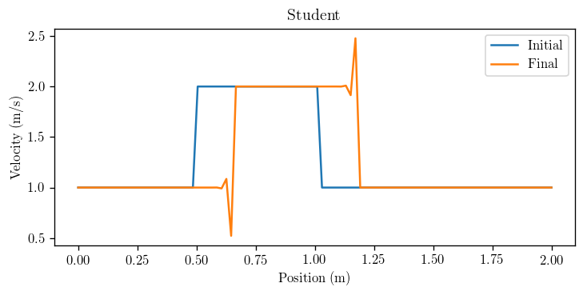
Step 3: Diffusion Equation in 1D
Professor
Partial differential equation: $$ \frac{\partial u}{\partial t} = \nu \frac{\partial^2 u}{\partial x^2} $$
Discretised: $$ \frac{u^{n+1}_i - u^n_i}{\Delta t} = \nu\frac{u^n_{i+1} - 2u^n_i + u^n_{i-1}}{(\Delta x)^2} $$
Initial condition: $$ u(x,0)= \begin{cases} 2, & x \in [0.5,1] \\ 1, & \mathrm{everywhere\;else} \end{cases} $$
nx = 41
dx = 2.0/(nx-1)
nt = 20
nu = 0.3
sigma = 0.2
dt = sigma*dx**2/nu
u = numpy.ones(nx)
u[int (.5/dx): int(1/dx + 1)] = 2.0
print(u)
pyplot.figure(1, figsize=(9,4), dpi=100)
pyplot.title('Professor')
pyplot.plot(numpy.linspace(0,2,nx), u)
for n in range(nt):
un = u.copy()
for i in range(1,nx - 1):
u[i] = un[i] + nu*dt/dx**2*(un[i+1] - 2*un[i] + un[i-1] )
pyplot.plot(numpy.linspace(0,2,nx), u)
pyplot.show()
[1. 1. 1. 1. 1. 1. 1. 1. 1. 1. 2. 2. 2. 2. 2. 2. 2. 2. 2. 2. 2. 1. 1. 1.
1. 1. 1. 1. 1. 1. 1. 1. 1. 1. 1. 1. 1. 1. 1. 1. 1.]
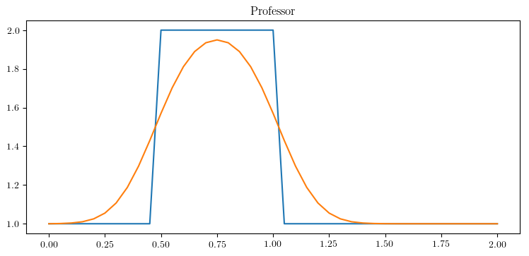
Student
Analytical Solution of the Diffusion Equation using a Fourier Transform:
Take the spatial Fourier transform $\mathcal F_x$ of the equation with an initial value problem:
$$ \frac{\partial u_F(k,t)}{\partial t} + \nu k^2 u_F(k,t) = 0 $$
This ODE is easily solved:
$$ u_F(k,t) = u(k,0)e^{-\nu k^2 t}, \quad u(k,0) = \mathcal F_x[u(x,0)] $$
To find the inverse spatial Fourier transform, we invoke the convolution theorem:
$$ u(x,t) = \mathcal F_x^{-1}\left[u_F(k,t)\right] = \mathcal F_x^{-1}[u(k,0)] * \mathcal F_x^{-1} \left[e^{-\nu k^2 t}\right] = u(x,0) * \mathcal F_x^{-1} \left[e^{-\nu k^2 t}\right] $$
The second inverse transform is the Fourier transform of a Gaussian, which is nicely found in the following manner. Let $f(k) = e^{-\nu k^2 t}$ (with $\nu$ and $t$ as parameters), now differentiate and take the Fourier transform:
$$ ix \cdot f(x) = -2\nu t \cdot i f’(x) $$
$$ \implies f(x) = \frac{1}{\sqrt{4\pi\nu t}}\exp\left(-\frac{x^2}{4\nu t}\right) $$
Using the definition of convolution, the solution can be expressed as:
$$ u(x,t) = \frac{1}{\sqrt{4\pi\nu t}}\int_{-\infty}^{\infty} u(y,0)\exp\left[-\frac{(x-y)^2}{4\nu t}\right] \mathrm dy $$
Note: This looks strangely similar to a Green’s function with the kernel:
$$ G(x,t;y) = \frac{1}{\sqrt{4\pi\nu t}}\exp\left[-\frac{(x-y)^2}{4\nu t}\right] $$
Let’s apply this solution to the current initial condition:
$$ \begin{align} u(x,t) & = \frac{1}{\sqrt{4\pi\nu t}}\int_{-\infty}^{0.5}\exp\left[-\frac{(x-y)^2}{4\nu t}\right] \mathrm dy + \frac{2}{\sqrt{4\pi\nu t}}\int_{0.5}^{1}\exp\left[-\frac{(x-y)^2}{4\nu t}\right] \mathrm dy \\
& + \frac{1}{\sqrt{4\pi\nu t}}\int_{1}^{\infty}\exp\left[-\frac{(x-y)^2}{4\nu t}\right] \mathrm dy \end{align}$$
There’s no closed-form solution for these integrals. :( But these are expressible using the error function with the substitution:
$$ \frac{x-y}{\sqrt{4\nu t}} = u, \quad \mathrm{erf}(x) = \frac{2}{\sqrt{\pi}}\int_{0}^{x}e^{-u^2} \mathrm du $$
$$ \implies u(x,t) = 1 - \frac{1}{2}\mathrm{erf}\left(\frac{x-1}{\sqrt{4\nu t}}\right) + \frac{1}{2}\mathrm{erf}\left(\frac{x-0.5}{\sqrt{4\nu t}}\right)$$
We can now compare our solver’s accuracy with this “analytical” solution!
Note: This version forces the Courant Number to be 0.2 and calculates the time-step based on the mesh size accordingly for “accurate” results. It takes user input of simulation time and also runs a calculation using the “analytical” solution (via sympy) for comparison.
## Analytical solution setup using SymPy
x, t, nu = sympy.symbols('x t nu')
u_diffusion = 1 - 0.5*sympy.erf((x-1)/(sympy.sqrt(4*nu*t))) + 0.5*sympy.erf((x-0.5)/(sympy.sqrt(4*nu*t)))
u_func_diffusion = sympy.lambdify((t,x,nu), u_diffusion, modules=['numpy', 'sympy'])
def diffusionEquation(mesh_size, time):
dx = 2.0/mesh_size
nu = 0.3
sigma_max = 0.2
dt = sigma_max*dx**2/nu
time_steps = int(time/dt)
## Initial condition definition
x = numpy.linspace(0,2,mesh_size)
u = numpy.ones((time_steps,mesh_size))
u[0][int (.5/dx): int(1/dx + 1)] = 2.0
u_analytical = numpy.asarray([u_func_diffusion(time_steps*dt, xi, nu) for xi in x])
for n in range(time_steps-1):
for i in range(1,mesh_size - 1):
u[n+1][i] = u[n][i] + nu*dt/dx**2*(u[n][i+1] - 2*u[n][i] + u[n][i-1])
return x, u, u_analytical
pos, vel, vel_analytical = diffusionEquation(100, 0.03333)
# Plotting
pyplot.figure(1,figsize=(7,3), dpi=120)
pyplot.title('Student')
pyplot.plot(pos, vel[0], label='Initial')
pyplot.plot(pos, vel[-1], label='Final')
pyplot.plot(pos, vel_analytical, '--', label='Analytical')
pyplot.xlabel('Position (m)')
pyplot.ylabel('Velocity (m/s)')
pyplot.legend()
pyplot.show()
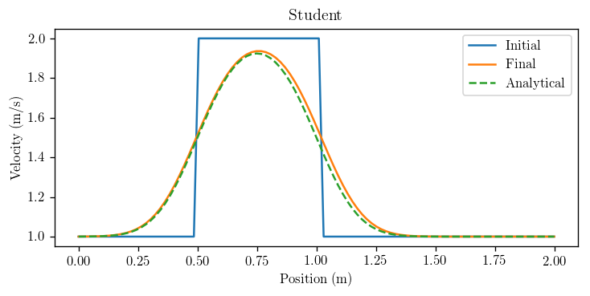
Step 4: Burgers’ Equation
Professor
Partial differential equation:
$$ \frac{\partial u}{\partial t} + u\frac{\partial u}{\partial x} = \nu\frac{\partial^2 u}{\partial x^2} $$
Discretised: $$ \frac{u^{n+1}_i - u^n_i}{\Delta t} + u^n_i\frac{u^n_i - u^n_{i-1}}{\Delta x} = \nu\frac{u^n_{i+1} - 2u^n_i + u^n_{i-1}}{(\Delta x)^2} $$
Student’s modification: The notation has been clarified compared to the original presentation (including a missing condition).
Initial conditions (using the analytical solution):
$$ u(x,0) = -\frac{2\nu}{\phi}\frac{\partial\phi}{\partial x} + 4 $$
$$ \phi(x,0) = \exp\left(\frac{-x^2}{4\nu}\right) + \exp\left(\frac{-(x-2\pi)^2}{4\nu}\right) $$
Boundary conditions: $$ u(0,t) = u(2\pi,t), \quad u’(0,t) = u’(2\pi, t)$$
## Analytical solution setup using SymPy
x, t, nu = sympy.symbols('x t nu')
phi = sympy.exp(-(x-4*t)**2/(4*nu*(t+1))) + sympy.exp(-(x-4*t-2*numpy.pi)**2/(4*nu*(t+1)))
diffphi = sympy.diff(phi, x)
u = -2*nu/phi*diffphi + 4
ufunc = sympy.lambdify((t,x,nu), u)
nx = 81
dx = 2.0*numpy.pi/(nx-1)
nt = 100
nu = 0.07
dt = dx*nu
x = numpy.linspace(0, 2*numpy.pi,nx)
un = numpy.empty(nx)
t = 0
u = numpy.asarray([ufunc(t,x0,nu) for x0 in x])
pyplot.figure(figsize=(9, 4),dpi=100)
pyplot.title('Professor')
pyplot.plot(x, u, marker='o', lw=2)
pyplot.xlim([0, 2 * numpy.pi])
pyplot.ylim([0, 10])
for n in range(nt):
un = u.copy()
for i in range(1,nx-1):
u[i] = un[i]*(1-dt/dx*(un[i] - un[i-1])) + nu*dt/dx**2*(un[i+1] - 2*un[i] + un[i-1])
u[0] = un[0]*(1-dt/dx*(un[0] - un[-2])) + nu*dt/dx**2*(un[1] - 2*un[0] + un[-2])
u[-1] = u[0]
u_analytical = numpy.asarray([ufunc(nt*dt, xi, nu) for xi in x])
# Plotting
pyplot.figure(figsize=(9, 4),dpi=100)
pyplot.plot(x, u, marker='o', lw=2, label='Computational')
pyplot.plot(x, u_analytical, label='Analytical')
pyplot.xlim([0, 2 * numpy.pi])
pyplot.ylim([0, 10])
pyplot.legend()
pyplot.show()
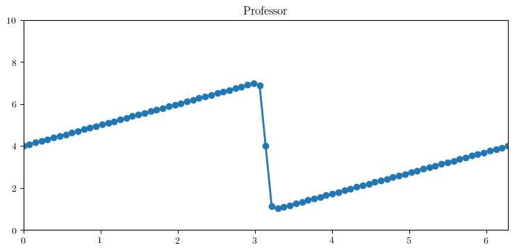
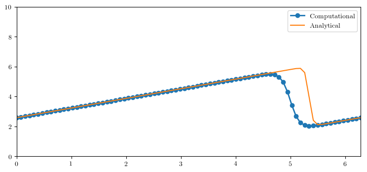
Student
def burgersEquation(mesh_size, time):
dx = 2.0*numpy.pi/(mesh_size-1)
nu = 0.07
dt = dx*nu
timesteps = int(time/dt)
x = numpy.linspace(0, 2*numpy.pi, mesh_size)
u = numpy.empty((timesteps,mesh_size))
u_analytical = numpy.asarray([ufunc(timesteps*dt, xi, nu) for xi in x])
u[0] = numpy.asarray([ufunc(0,x0,nu) for x0 in x])
for n in range(timesteps-1):
for i in range(1,mesh_size-1):
u[n+1][i] = u[n][i]*(1-dt/dx*(u[n][i] - u[n][i-1])) + nu*dt/dx**2*(u[n][i+1] - 2*u[n][i] + u[n][i-1])
u[n+1][0] = u[n][0]*(1-dt/dx*(u[n][0] - u[n][-2])) + nu*dt/dx**2*(u[n][1] - 2*u[n][0] + u[n][-2])
u[n+1][-1] = u[n+1][0]
return x, u, u_analytical
pos, vel, vel_analytical = burgersEquation(101,0.5)
# Plotting
pyplot.figure(1,figsize=(7,4), dpi=120)
pyplot.title('Student')
pyplot.plot(pos, vel[0], marker='o', lw=2, label = 'Initial')
pyplot.plot(pos, vel[-1], marker='o', lw=2, label='Computational Result')
pyplot.plot(pos, vel_analytical, label='Analytical Result')
pyplot.xlabel('Position (m)')
pyplot.ylabel('Velocity (m/s)')
pyplot.xlim([0, 2*numpy.pi])
pyplot.ylim([0, 10])
pyplot.legend()
pyplot.show()
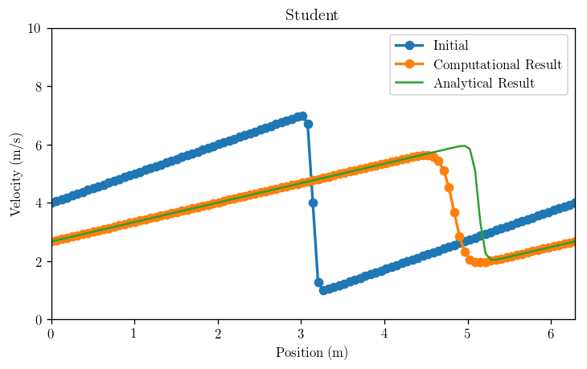
Aside: Kardar–Parisi–Zhang equation
Student
The KPZ equation is a generalisation of Burgers’ equation to multiple dimensions. Write Burgers’ equation in the form:
$$ \frac{\partial u}{\partial t} + \frac{1}{2}\frac{\partial u^2}{\partial x} = \nu\frac{\partial^2 u}{\partial x^2} $$
Let $ u = \psi_x $, then Burgers’ equation becomes:
$$ \psi_{tx} + \psi_x\psi_{xx} = \nu\psi_{xxx} $$
$$ \partial_x\left(\psi_t + \frac{\psi_x^2}{2} \right) = \nu\partial_x(\psi_{xx}) $$
Integrating with respect to x gives the following equation:
$$ \frac{\partial \psi}{\partial t} + \frac{1}{2}\left(\frac{\partial \psi}{\partial x}\right)^2 = \nu\frac{\partial^2 \psi}{\partial x^2} $$
This is the KPZ equation in one dimension, which seemingly generalises to:
$$ \frac{\partial \psi}{\partial t} + \frac{\lambda}{2}\left(\nabla \psi\right)^2 = \nu\nabla^2 \psi $$
Whatever “$(\nabla \psi)^2$” means. Let $\lambda = 2$ and take the one-dimensional case, then the equation has an integrating factor (thanks to Vyn from freenode’s ##math!), which allows it to be written in the form of the 1D diffusion equation:
$$ \frac{\partial}{\partial t}\left[\exp\left(-\frac{\psi}{\nu}\right)\right] = \nu\frac{\partial^2}{\partial x^2}\left[\exp\left(-\frac{\psi}{\nu}\right)\right] $$
TODO: Add solution.
Step 5: 2D Linear Convection
Professor
Partial differential equation: $$ \frac{\partial u}{\partial t} + c\left(\frac{\partial u}{\partial x} + \frac{\partial u}{\partial y} \right) = 0 $$
Discretised: $$ \frac{u^{n+1}_{i,j} - u^n_{i,j}}{\Delta t} + c\left(\frac{u^n_{i,j} - u^n_{i-1,j}}{\Delta x} + \frac{u^n_{i,j} - u^n_{i,j-1}}{\Delta y}\right) = 0 $$`
Student’s modification: This has been modified into a function to take one input with two options, a “fast” (which uses array operations with NumPy) and a “slow” (which uses for loops). For fast, input 1 into the function, otherwise input any other number for slow. timeit has been imported to clock the processing speeds of each variant.
import timeit
def linearconv2D(speed):
nx = 81
ny = 81
dx = 2.0/(nx - 1)
dy = 2.0/(ny - 1)
c = 1
sigma = 0.2
nt = 100
dt = sigma*dx
x = numpy.linspace(0, 2, nx)
y = numpy.linspace(0, 2, ny)
u = numpy.ones((ny,nx))
un = numpy.ones((ny,nx))
u[int(0.5/dy):int(1.0/dy + 1),int(.5/dx):int(1.0/dx + 1)] = 2
fig = pyplot.figure(figsize=(9,7),dpi=100)
ax = fig.gca(projection='3d')
X, Y = numpy.meshgrid(x,y)
surf = ax.plot_surface(X, Y, u[:], cmap=cm.viridis)
if speed == 1:
tick = timeit.default_timer()
for n in range(nt + 1):
un = u.copy()
u[1:,1:] = u[1:,1:] - c*dt*((u[1:,1:] - u[:-1,1:])/dx + (u[1:,1:] - u[1:,:-1])/dy)
u[0,:] = 1
u[-1,:] = 1
u[:,0] = 1
u[:,-1] = 1
tock = timeit.default_timer()
print('Array operations took %s seconds' %(tock - tick))
else:
tick = timeit.default_timer()
for n in range(nt + 1):
un = u.copy()
row, col = u.shape
for j in range(1, row):
for i in range(1, col):
u[j,i] = un[j,i] - c*dt*((un[j,i] - un[j,i-1])/dx + (un[j,i] - un[j-1,i])/dy)
u[0,:] = 1
u[-1,:] = 1
u[:,0] = 1
u[:,-1] = 1
tock = timeit.default_timer()
print('For loops took %s seconds' %(tock - tick))
fig = pyplot.figure(figsize=(9, 7), dpi=100)
ax = fig.gca(projection='3d')
surf2 = ax.plot_surface(X, Y, u[:], cmap=cm.viridis)
linearconv2D(1)
linearconv2D(0)
Array operations took 0.011439886002335697 seconds
For loops took 3.0533901620074175 seconds
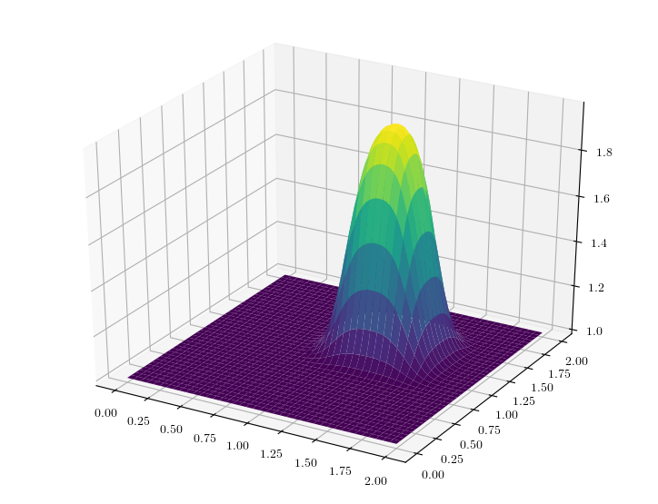
Student
This function takes the mesh size in each direction as separate inputs and also the required simulation time. It minimises the time-step based on the smaller grid distance between x and y for accuracy (at the cost of speed!).
def linearConvection2D(mesh_size_x, mesh_size_y, time):
dx = 2/(mesh_size_x - 1)
dy = 2/(mesh_size_y - 1)
c = 1
sigma = 0.2
dt = sigma*min(dx,dy)
timesteps = int(time/dt)
x = numpy.linspace(0,2, mesh_size_x)
y = numpy.linspace(0,2, mesh_size_y)
u = numpy.ones((timesteps, mesh_size_x, mesh_size_y))
u[0][int(0.5/dy):int(1.0/dy + 1),int(.5/dx):int(1.0/dx + 1)] = 2
for n in range(timesteps-1):
u[n+1][1:,1:] = u[n][1:,1:] - c*dt*((u[n][1:,1:] - u[n][:-1,1:])/dx + (u[n][1:,1:] - u[n][1:,:-1])/dy)
u[n+1][0,:] = 1
u[n+1][-1,:] = 1
u[n+1][:,0] = 1
u[n+1][:,-1] = 1
return x, y, u
pos_x, pos_y, vel = linearConvection2D(201, 201, 2.5/5.0)
# Plotting
fig = pyplot.figure(1, figsize=(9,7), dpi=100)
ax = fig.gca(projection='3d')
X, Y = numpy.meshgrid(pos_x, pos_y)
surf = ax.plot_surface(X, Y, vel[0], cmap=cm.viridis)
fig2 = pyplot.figure(2, figsize=(9,7), dpi=100)
ax = fig2.gca(projection='3d')
X, Y = numpy.meshgrid(pos_x, pos_y)
surf2 = ax.plot_surface(X, Y, vel[-1], cmap=cm.viridis)
pyplot.show()
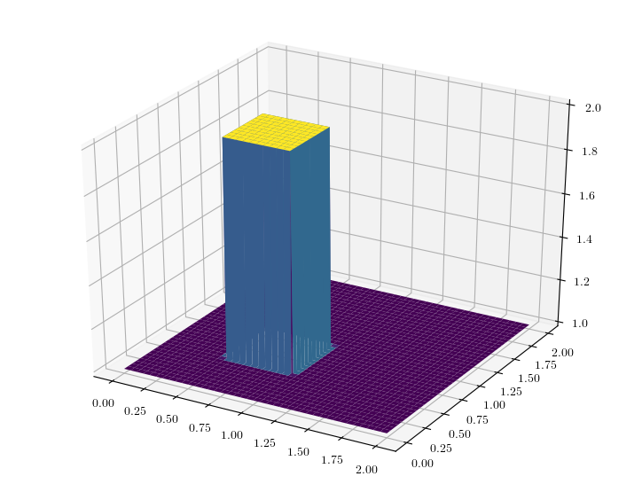
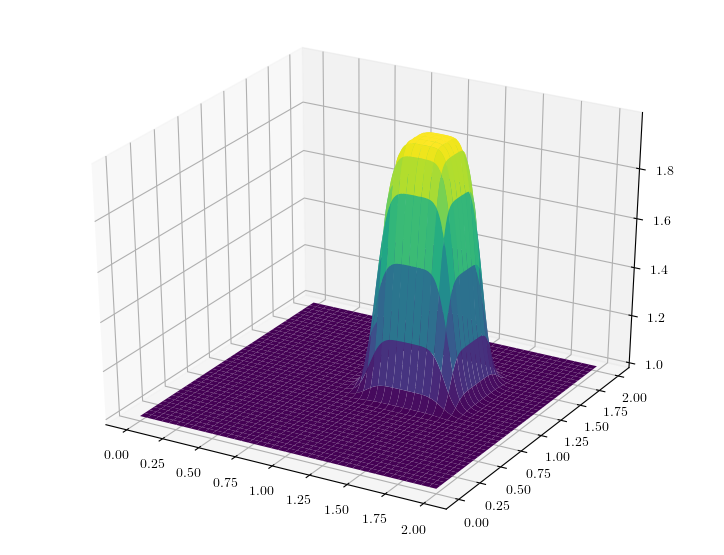
More to come soon!